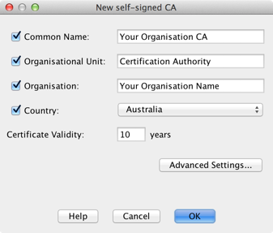
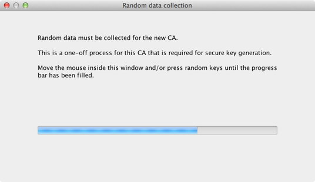
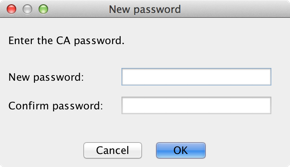
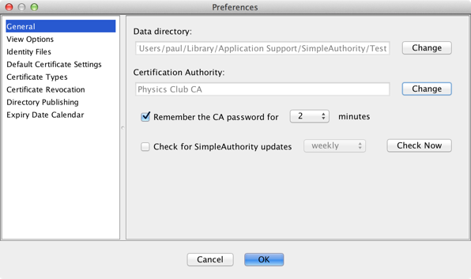
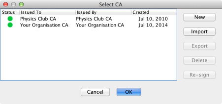

Generating a CA
How to generate a new CA
A Certification Authority (CA) must be generated before you can issue keys and certificates to users. This CA will be used to sign new user certificates.
To generate a new CA:
- Select File > New CA..., or follow the prompt to generate a new CA when SimpleAuthority is first started.
- Enter the details for the new CA and click OK.

(Enterprise license required) The CA certificate contents can be further customised by selecting Advanced Settings.... Refer to custom certificate types for details. - Random data must be collected to generate cryptographically secure keys for the new CA, and for the future
generation of user keys. Move the mouse inside the Random data collection window and/or press random keys
until the progress bar is filled.

- Wait while the new CA keys are generated.
- Enter a password to protect the CA keys.

- The new CA has been generated. SimpleAuthority will be configured to use this new CA from now on. If you want to select a previously generated CA, you can change the CA selection under General settings in Options/Preferences (see below).
More complex CA hierarchies
The CA generated by the above procedure is self-signed. This should meet the needs of most organisations.
Some organisations may require a more complex CA hierarchy. For example, a self-signed CA may be used to generate one or more subordinate CAs, each of which issues certificates to a subgroup of users or to the same user group but for different purposes.
To generate a CA hierarchy, start by first generating the self-signed "Root CA". This Root CA should then be
used to generate user identities for all subordinate CAs. Each of these subordinate CA users should be configured
with the Certification Authority Certificate Type. These subordinate CAs can then be used to issue user
certificates or even other CA certificates by changing the Certification Authority selection in
Options/Preferences.

The Select CA dialog provides options for managing any CAs that have been created, and provides a way to easily switch between CAs for signing new certificates. This dialog can also be used to
- view a CA certificate - by double clicking on an entry
- generate a new self-signed CA
- import or export a CA from/to an external identity file
- delete a CA, and
- re-sign a CA certificate - using an external, third party CA.
